Hexagonal tiling or tessellation
is a pattern of regular hexagons that fit together seamlessly, often
seen in nature like honeycomb structures and used in floor tiling and graphic designs.
Truchet Tiling
uses square tiles with unique designs, often curves or lines, that connect when placed next
to each other. Named after Sébastien Truchet, this method allows for
intricate and appealing patterns by rotating and arranging tiles.
Hexagonal Truchet tiling merges Hexagonal Tiling and Truchet Tiling, featuring hexagons adorned
with three Bezier curves connecting the midpoints of their edges.
Overview
Imagine hexagonal tiles with a flat top. We number the edges clockwise starting from the top edge as
zero.
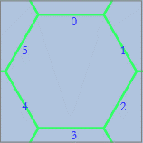
From the top edge, we have five choices for the first curve connection, and then three choices from the
remaining four edges. The last two edges automatically pair up, giving us a grand total of 15 unique
hexagonal Truchet tiles. Check out the table below to see all 15 tiles, complete with their edge-pair
codes.
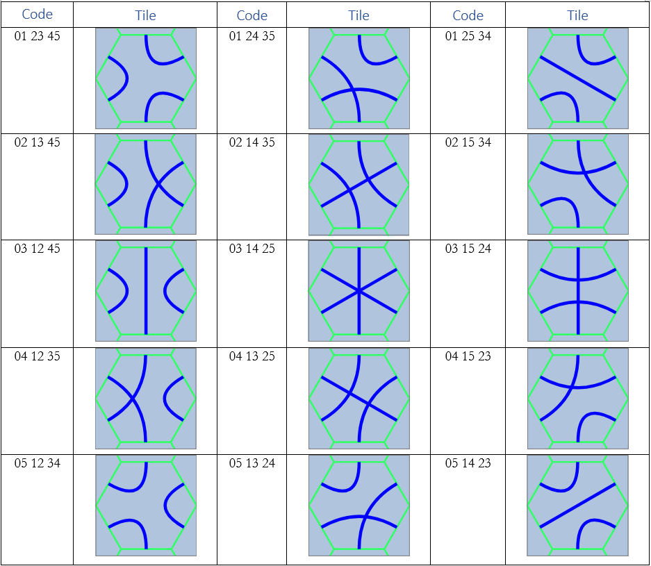
When we lay out many tiles on a hex grid, the curves connect to form a spectacular random image.
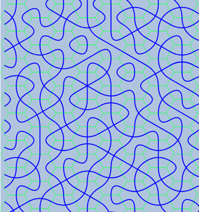 |
When repeated in a consistent order, these tiles can form delightful patterns and motifs: 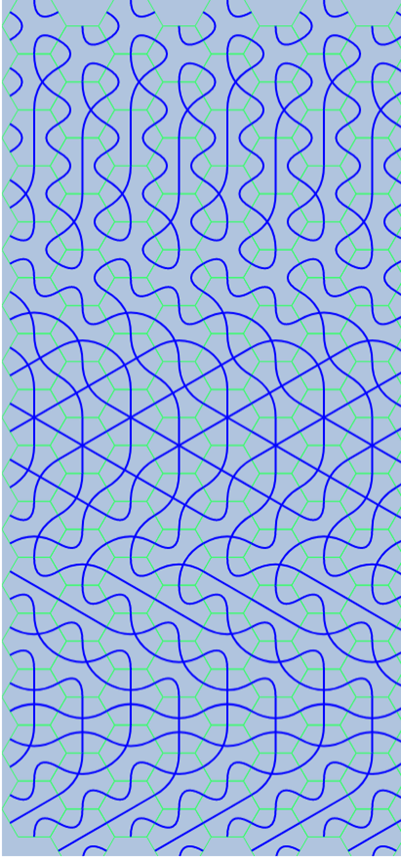 |
|
Here's how it looks without the underlying grid: 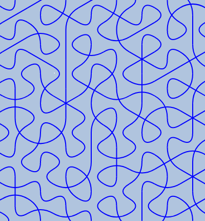 |
Encoding
The orientation of each tile can visualize information linked to its position within the tiling. With 15 tiles at our disposal, we can encode the English alphabet, some punctuation, and numbers.
The simplest approach would be to add an empty tile to the mix, making 16 tiles in total, and encode
everything under the sun with just two tiles, yielding 16*16 = 256 items. But that's too
straightforward, overly
mechanical, and not very memorable for us humans.
Considering letter frequency, the nine most
common English letters (E, T, A, O, I, N, S, H, and R) make up 70% of letter usage.
If we assign a single tile to each of these letters and use two tiles for all other letters,
it would be more efficient than using two symbols for every letter:
0.7*n + 0.3*2*n = 1.3*n versus 2*n, where n
is the number of letters in the text.
The space, a frequent flyer in texts, also earns its single-tile encoding.
So let's whip up a legendary, fictional alphabet using these tiles! We're ditching the empty tile because who likes gaps in their text? Besides, the number 16 feels too computery with all its powers of two—humans prefer the quirky charm of odd numbers.
Punctuation
First up, the space. It's so crucial and common that it's encoded not with two tiles, not with one, but with half a tile. Well, not literally, but you get the idea. In the encoding, two characters denote a space.
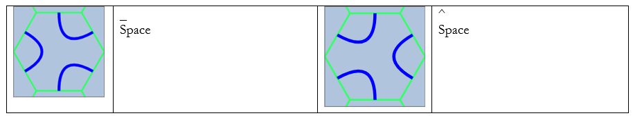
These tiles look similar and stand out from the rest, used interchangeably to indicate spaces between words. However, one can also signal the end of a special sequence. Throughout the text, symbols _ and ^ represent the space tiles. Two consecutive spaces (e.g., _^) signify a line break or the end of a paragraph.
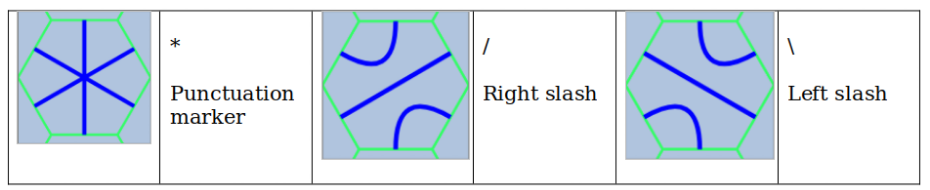
The tile marked with * followed by a space tile indicates a period, ending a sentence. This tile, in combination with others, creates various punctuation marks (see below). The tiles marked with / and \ (right and left slash) are used as case markers, similar to English's lower and upper cases, but this encoding features three cases: Right, Left, and None.
Letters
Tiles 1-9 encode the nine most frequent English letters: E, T, A, O, I, N, S, H, and R, in
that
order.
Preceded by the / marker, the next nine letters are encoded:
D, L, C, U, M, W, F, G, and Y,
and the \ marker encodes the remaining eight letters: P, B, V, K, J, X, Q, and Z:
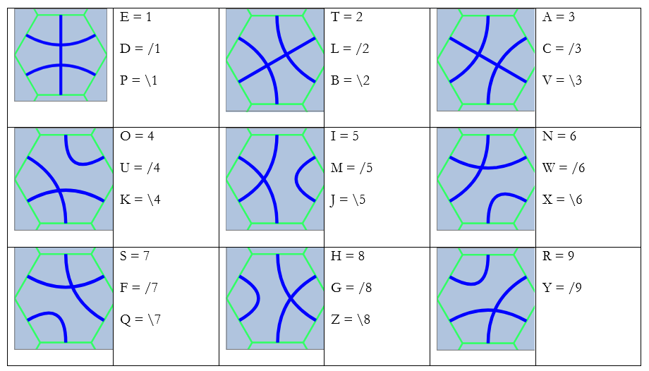
Sample text encoded in Hex Truchet:
the quick brown fox jumps over the lazy dog.
281_\7/45 /3\4_\294 /66_/74\6 _\5/4/5\1 7_4\319_2 81_/23\8/ 9_/14/8*
The text is arranged vertically from top to bottom, with columns running from left to right.
| 2 | / | / | _ | 7 | 8 | 9 |
| 8 | 3 | 6 | \ | _ | 1 | _ |
| 1 | \ | 6 | 5 | 4 | _ | / |
| _ | 4 | _ | / | \ | / | 1 |
| \ | _ | / | 4 | 3 | 2 | 4 |
| 7 | \ | 7 | / | 1 | 3 | / |
| / | 2 | 4 | 5 | 9 | \ | 8 |
| 4 | 9 | \ | \ | _ | 8 | * |
| 5 | 4 | 6 | 1 | 2 | / |
Here's how it looks encoded in Hex Truchet, drawn in grids 9x7 and 8x8:
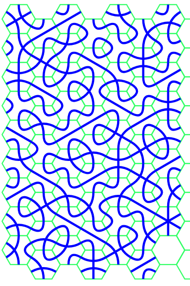
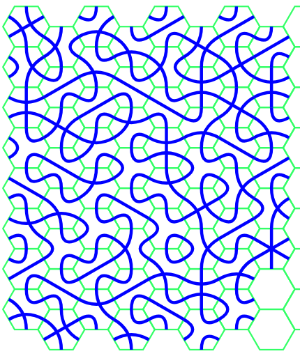
The same example without the underlying grid:
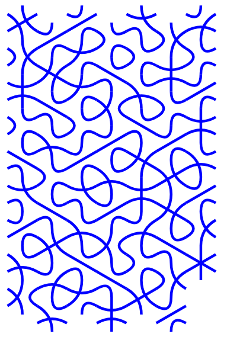
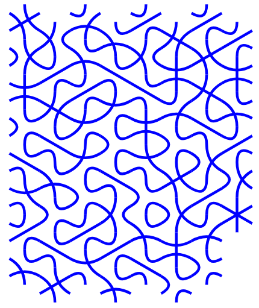
For a larger example, consider Article 1 of the Universal Declaration of Human Rights (171 characters).
If
encoded as two hex digits, it requires 342 tiles, but in Hex Truchet, it only needs 208 tiles:
All human beings are born free and equal in dignity and rights.
They are endowed with reason and conscience and should
act towards one another in a spirit of brotherhood.
3/2/2_8/4/536_\2156/87_391_\2496_/7911_36/1_1\7/43/2_56_/15/8652/9_36/1_95/8827*_Here's how it looks with and without the grid:
281/9_391_16/14/61/1_/6528_913746_36/1_/3467/3516/31_36/1_784/4/2/1_
3/32_24/639/17_461_3642819_56_3_7\15952_4/7_\2942819844/1*_
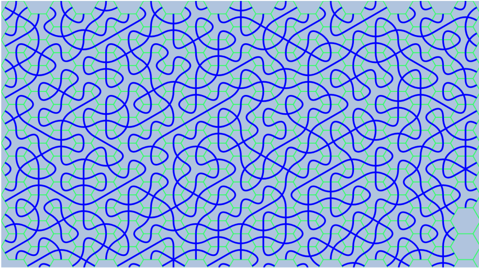
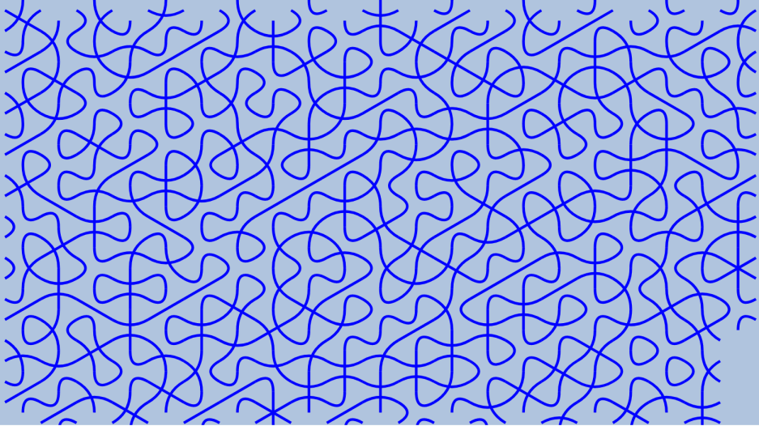
It's worth noting that text written or drawn in this encoding can be read not only in two directions
(straight and upside down) like ordinary alphabets, but also along four diagonals. Therefore, it's
necessary
to somehow mark the beginning of the text, perhaps with an arrow.
It is also possible to arrange consecutive tiles not linearly, but in an expanding spiral, starting from
the
center.
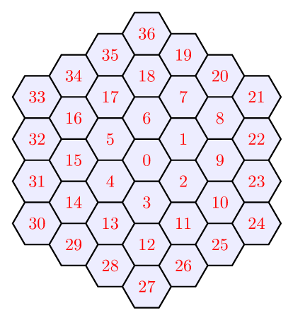
Other punctuation combinations
| Notation | Meaning | Notation | Meaning | Notation | Meaning |
| *^ | . dot | **^ | : colon | ***^ | ... ellipsis |
| *0 | • capital marker | */^ | , comma | *\^ | ? question |
| *1^ | ! exclamation | *2^ | “ double quote (open) | *3^ | ” double quote (close) |
| *4^ | ' quote | *5^ | ( open brace | *6^ | - dash, hyphen |
| *7^ | ; semicolon | *8^ | ) close brace | *9^ | ` back quote |
The capital marker indicates that the subsequent letter is capitalized. It is typically used to denote proper nouns, such as names and titles.
Numbers
The following table shows the encoding of the numbers 1-9, 0, and 10, 11 for the
duodecimal number system.
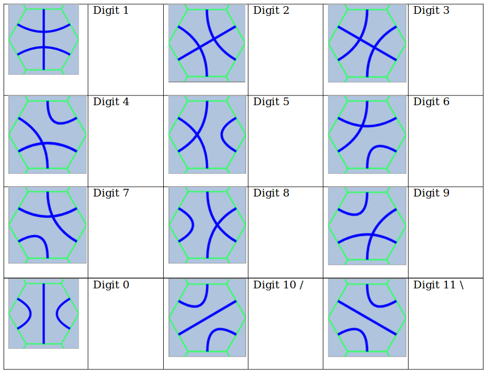
The tile for 0 means just 0 if used alone (i.e., followed by space). If after the 0 tile there is any other digit tile, all of them until the space tile form a duodecimal number. See examples in the table below.
| Tiles | Number | Tiles | Number | Tiles | Number |
| 0^ | 0 | 01^ | 1 | 02^ | 2 |
| 03^ | 3 | 04^ | 4 | 05^ | 5 |
| 06^ | 6 | 07^ | 7 | 08^ | 8 |
| 09^ | 9 | 0/^ | 10 | 0\^ | 11 |
| 010^ | 12 | 011^ | 13 | 012^ | 14 |
| 018^ | 20 | 026^ | 30 | 034^ | 40 |
| 020^ | 24 | 030^ | 36 | 040^ | 48 |
| 084^ | 100 | 06\4^ | 1000 | 01000^ | 1728 |
1000(10) = 6*12*12 + 11*12 + 4 = 6\4(12)
1000(12) = 12*12*12 = 1728(10)